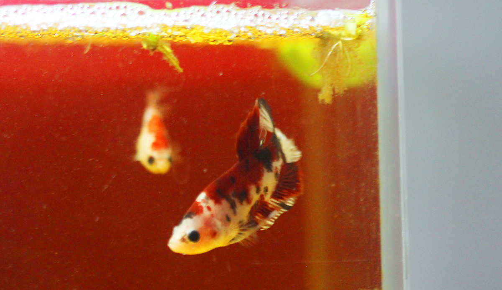

第一：判斷及挑選公母魚
以泰國鬥魚來說，母鬥魚體色不若公鬥魚鮮豔，也沒有像公鬥 魚那麼誇張的尾鰭與背鰭，且母鬥魚可以混養，彼此間不會打架，很好辨識，繁殖期在每年的三月至十月左右，一年可以生4~5 次左右。
一般來說公魚的體型最好大於母魚，這樣在繁殖上比較不會發 生公魚被母魚追咬的情形。大抵來說鬥魚年紀大概在2-3個月的時候就會開始有吐泡巢想要繁殖的動作，但是這時候的 鬥魚體型太小並不太適合作繁殖的動作。在挑選上建議選4-6個月的魚來做繁殖，體型大小較適合且也較趨於性成熟。另外公魚的挑選上，除了體型要比母魚稍大 外，主動且凶一點的公魚在繁殖成功的機率上好像也會容易一點。
第二：維持水溫
鬥魚的繁殖環境其實並無很多限制，比較適合的繁殖溫度大概 在26-30度左右，夏天又較冬天較容易繁殖(公魚在夏天較容易吐泡巢)，在冬天天氣冷時，要用加溫器維持水溫 28~30度左右，因天冷時，公魚是不會發情吐泡泡的。
三：配種第一步 (相親)
公母魚要放入繁殖缸，開始前先透過隔板分開或將母魚放在透 明杯中，讓公魚看的到母魚！用意在促使公魚發情，也讓母魚熟悉公魚！建議佈置鬥魚繁殖缸時，水位大約在15公分上 下較為適當，也不宜有水流或是水妖精打氣最好是靜水的狀態，然後放置一些水草，形成可以躲避的空間，讓母鬥魚遇到較凶的公鬥魚強烈追求時，可有緩衝空間， 不至於被咬傷，如果公魚不凶就不需要放太多的東西在裡面，這樣會降低繁殖的成功率，為了防止繁殖時公母魚追逐時，將公魚所築的泡巢弄散，可以將保利龍杯切 一半放在水面上讓公魚在裡面築泡巢,便可以防止這種情形的發生。
第四：配種第二步 (進洞房)
繁殖缸(洞房)的 選擇，適合的大約約一尺缸或八吋缸，太大的缸子繁殖上不易成功，太小容易打鬥，
公魚發情的特徵：
公魚發情比母魚來的明顯得多，公魚開始發情吐泡泡築巢時， 會把繁多的小泡泡聚集在一起我們稱之為「築泡巢」，泡巢的功用在於可讓產下的卵與剛孵出的小魚苗附著，可能是為了方便公魚可集中管理照顧卵，母魚等肚子變 大且有卵含在生殖孔處時，才可將母魚放入配種。
如果公魚不發情怎麼辦??一般公魚在接受外在的刺激，會較容易吐泡巢，平時大約一個星期的時間公魚都沒有吐泡巢的慾望，可以持續換水或改變ph值的 方式刺激公魚，或是在等待吐泡巢的同時將母魚用透明杯子裝著，放下去促使公魚發情。
公魚築巢的速度很快，只需花上半天左右的時間便可築出一大 片，雖然牠築巢速度快，但不要將築巢中的公魚放置在氣流和水流較強的地方，不然泡泡很容易消失喔!!
母魚發情的特徵：
以一般正常來說，母魚平均約兩個禮拜抱一次卵，有些母魚一 個多禮拜左右就會再次抱卵，抱卵就表示已發情可以進行交配，至於抱卵數量，並不一定要挑選肚子很漲的母魚。肚子太大的母魚再繁殖時，公魚無法夾住母魚使的 射精不完全，導致公魚吃蛋的比例較高一些些，所以在挑選上大抵以選性成熟的母魚即可。繁殖過的母魚好好休息調養一段時間即可再次抱卵繁殖。
1. 因為抱卵，腹部明顯漲大
2.生殖孔就是在腹部下方的一點白 色突起物，這個小白點也是我們在分辯她是母魚的重要特徵，"發情時"生殖孔較會為凸出！
3.深色系的母魚發情時會有比較明 顯的斑馬紋(婚姻斑)，而淺色系的母魚較不易看出來，另外偶爾母魚在受到驚嚇時也會出現斑馬紋情況。
第五：配種第三步 (交配產卵)
正常情況下，等到公魚吐泡巢大小至少10或50硬幣大小時，便可以將母魚放入。公魚會先追逐母魚一陣子，公魚會守在泡巢杯下面,母魚會躲的遠遠的,過一段時間母魚 會開始試探性的接近公魚，公魚會將母魚作驅趕的動作，持續一段時間公魚便會開始和母魚在泡巢下面環繞或是出現繁殖的動作。
如果公魚一直追逐母魚，母魚不就範還被咬傷，母魚被追咬到 真的快掛了才撈出，如果看到母魚被咬了就將母魚輕易撈出，前面的動作就白忙一場了。如果是母魚追咬公魚，就要重新來過或換體型小一點的母魚再試看看。
如果兩情相悅，兩隻魚就會纏在一起，公魚以寬大的鰭，整個 身體捲繞著母魚，如同緊緊的擁抱著。在公魚纏繞擠壓下，母魚會排出十幾顆的卵，公魚同時授精，並將卵一顆顆拾起，丟向所築的泡巢中 (直徑約4cm)。母魚則像虛脫般的在水中載浮載沉，產生昏迷，數秒鐘後才回過神來，與公魚再戰一場。如此反復歷經數回合，產卵上百顆之後，公魚便會不留 情的驅趕母魚，此時便可將母魚撈出，以避免母魚讓公魚受驚嚇導致吃蛋或因追趕母魚導致泡巢分裂，之後公魚即會看守受精卵、修築泡泡巢、吃掉壞死或未授精的 卵。
第六：孵化與飼養
交配完需將母魚隔離(因 為母魚會吃自己的卵)，留下公魚照顧授精卵。2-6(視溫度而定)天仔魚會孵化，小魚還不會游泳是垂直掛在泡巢下面，所以公魚會忙碌的將掉下去的小魚啣回 泡巢上，就這樣持續到小魚會游泳，此時將公魚移出(不移的話換被公魚吃掉了)。比較要注意的是在繁殖過程最好不要餵公魚吃東西，不然會因起公魚吃的慾望而 將蛋或小魚吃掉，所以在繁殖前最好能將公魚餵飽一點。另外公魚發生吃蛋的原因大致上是卵未授精，也有的少數公魚是習慣性會吃蛋的情況。
剛孵出的仔魚很小還不會游泳，以卵黃囊維生，等牠開始會游 泳時，可餵以綠水(浮游生物、藻類)或輪蟲。約7天後，可餵以無節幼蟲、人工微粒飼料或仔魚飼料。等到仔魚長到約 1.5cm時，就可以餵一般飼料。當漸漸可以區分出公母魚時，開始注意公仔魚之間是否已有彼此打鬥行為，如發現立即分開飼養。